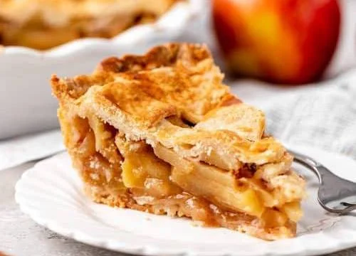

applepie

Apple pie is a classic dessert made with a flaky pastry crust and a sweet apple filling flavored with cinnamon and sugar.
It is best served warm and is a favorite for holidays and family gatherings.
Ingredients
- 2 pie crusts
- 6 apples, peeled and sliced
- 1/2 cup sugar
- 1 teaspoon cinnamon
- 2 tablespoons flour
- 1 tablespoon butter
- 1 teaspoon lemon juice
- 1 egg (for egg wash, optional)
Steps
- Preheat the oven to 375°F (190°C).
- Peel, core, and slice the apples.
- Mix the apples with sugar, cinnamon, flour, and lemon juice.
- Place one pie crust into a pie dish.
- Pour the apple mixture into the crust and dot with butter.
- Cover with the second pie crust and seal the edges.
- Cut a few small slits in the top crust to let steam escape.
- Brush the top with beaten egg if desired.
- Bake for 45–50 minutes, until the crust is golden brown.
- Let the pie cool for at least 20 minutes before serving.
Home